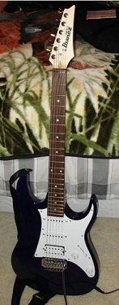

Guitars
I began my foray into playing guitar in summer of 2010. I'm mainly a "bedroom guitarist",
but that's a "level" I'm personally fine with staying at! I play for me and my amusement/goosebumps alone.
As far as what styles of music I play go, it's almost exclusively all rock-based, with my
favorites being alt. rock acts such as Dinosaur Jr. and Sonic Youth, as well as many bands considered "classic rock"
such as ZZ Top, Neil Young & Crazy Horse, and Black Sabbath.
J. Mascis Signature Squier Jazzmaster
This is my most recent (and most appreciated) purchase, acquired in summer of 2017. It is a signature Squier
(basically a subset of Fender which makes budget versions of their famous guitars) designed by one of my all-time favorite frontmen,
J. Mascis of the seminal alternative rock band Dinosaur Jr.
Fender CD140SCE Acoustic/Electric
I received this guitar as a high school graduation gift in May of 2013.
Plays just about anything well, folk rock, alt. rock, blues, you name it... acoustically, of course!
Ibanez IJX40
This is the guitar that threw the spark which ignited my passion and interest in playing! I got my hands on this guitar in July of 2010. It is by far the one in my (very small) collection which has been through the most... basement practice with a crappy high school band, playing for friends to try and showcase my budding talents long ago... This guitar will always hold a special place in my heart.
